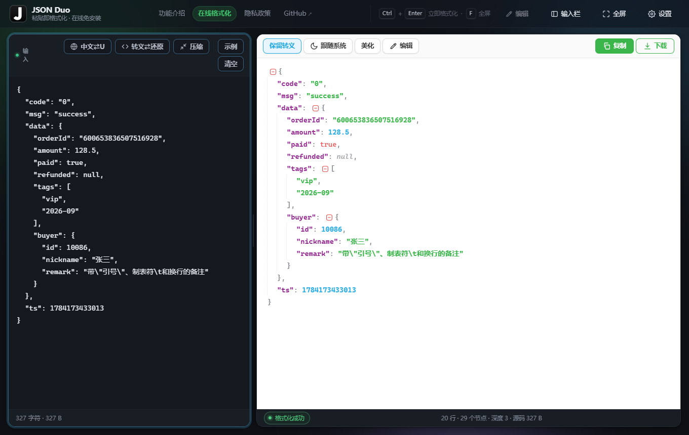
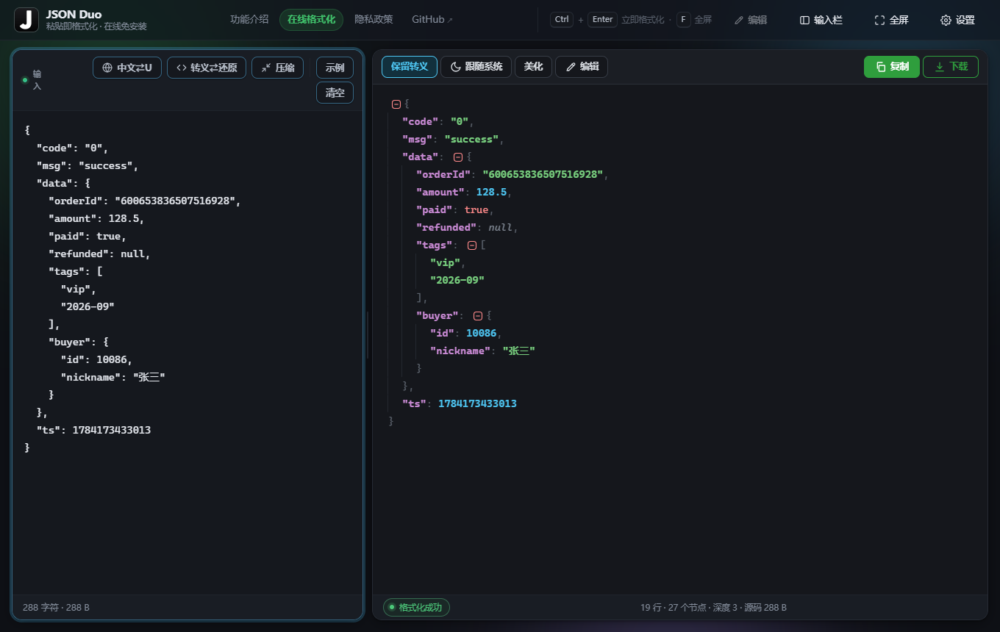
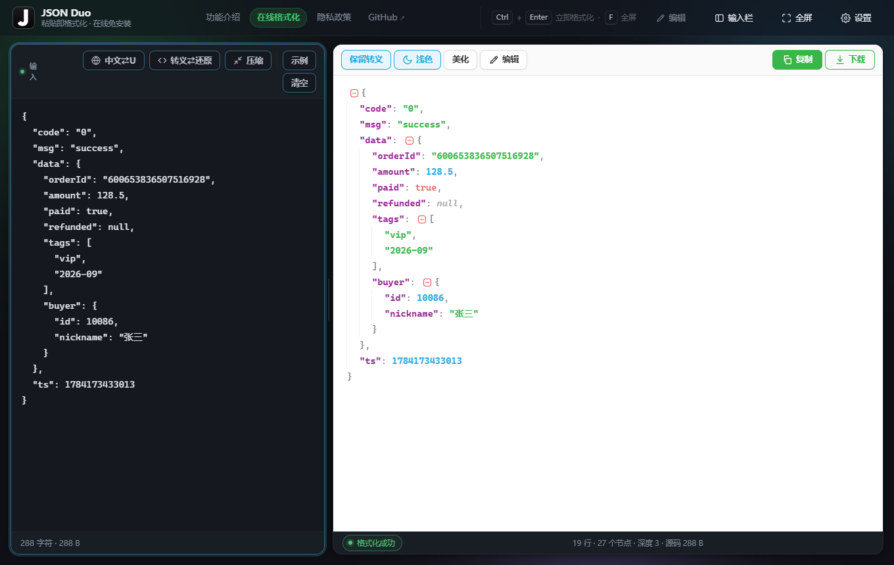
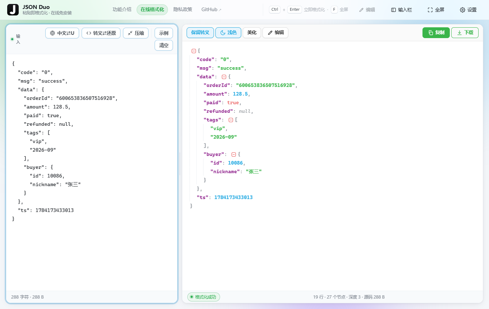

用户看到的是：系统处于深色主题时，左栏与顶栏都是深的，右侧 JSON 树视图却是白底。 根因不在配色表，而在两处「把主题写进 DOM」的逻辑，各错一半：
① 加载即深色 —— 右栏不跟。
viewer.js 的 applyTheme() 靠一个媒体查询句柄把
theme === 'auto' 折算成实际档位，而 createViewer() 最前面就调用了它 ——
那一刻该变量（var mql）还只是声明提升出来的 undefined，
于是 'auto' 恒被折算成浅色，树视图拿到 data-theme="light"。
整页看着仍是深的，是因为深色 token 挂在 @media (prefers-color-scheme: dark) 里、
选择器写作 :not([data-theme="light"])，没有属性照样命中。
系统主题「中途」变化时反而正常（那时句柄已赋值）——「刷新就白、切一下就好」正是这处顺序 bug 的指纹。
② 手动选浅色 —— 整页不跟。
editor.js 的 applyPageTheme('light') 走的是 删掉 data-theme 属性，
而不是显式写 "light"；上面那个 :not([data-theme="light"]) 于是照样命中，
系统是深色时整页仍按深色铺 —— 变成「整页深、右栏浅」，与 ① 互为镜像。
固定条件：prefers-color-scheme: dark，主题档位「跟随系统」，同一段 JSON。
判据是「整页与右栏同深浅」，不是某一边好不好看。

data-theme="light"），
与左侧深色输入栏割裂
固定条件：prefers-color-scheme: dark，在右栏工具条上把档位点到「浅色」。
「改前」这一格是把旧的 applyPageTheme 行为（浅色时删属性）原样重放出来的，
不是手画的示意。


新增 tools/verify-theme.py：用 CDP 真机跑 7 个场景（加载即深色 / 加载即浅色 /
系统中途切换 / 手动档位压过系统 / 手动档位刷新后仍生效 / 收尾复位），
对网页版工作台与扩展独立编辑页各验一遍；
每一格都要求 <html data-theme>、.jf-root[data-theme]
与两者的计算背景色三层同时成立，共 14 项，当前全绿。